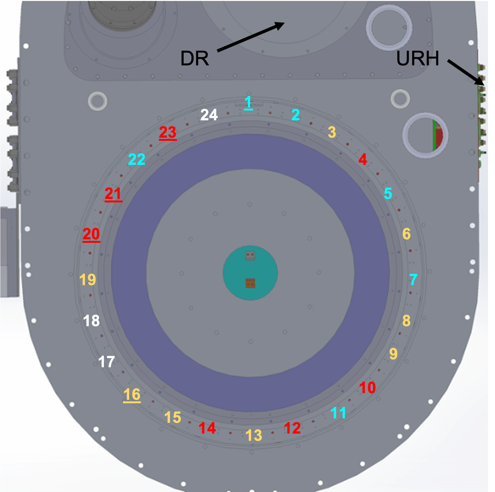
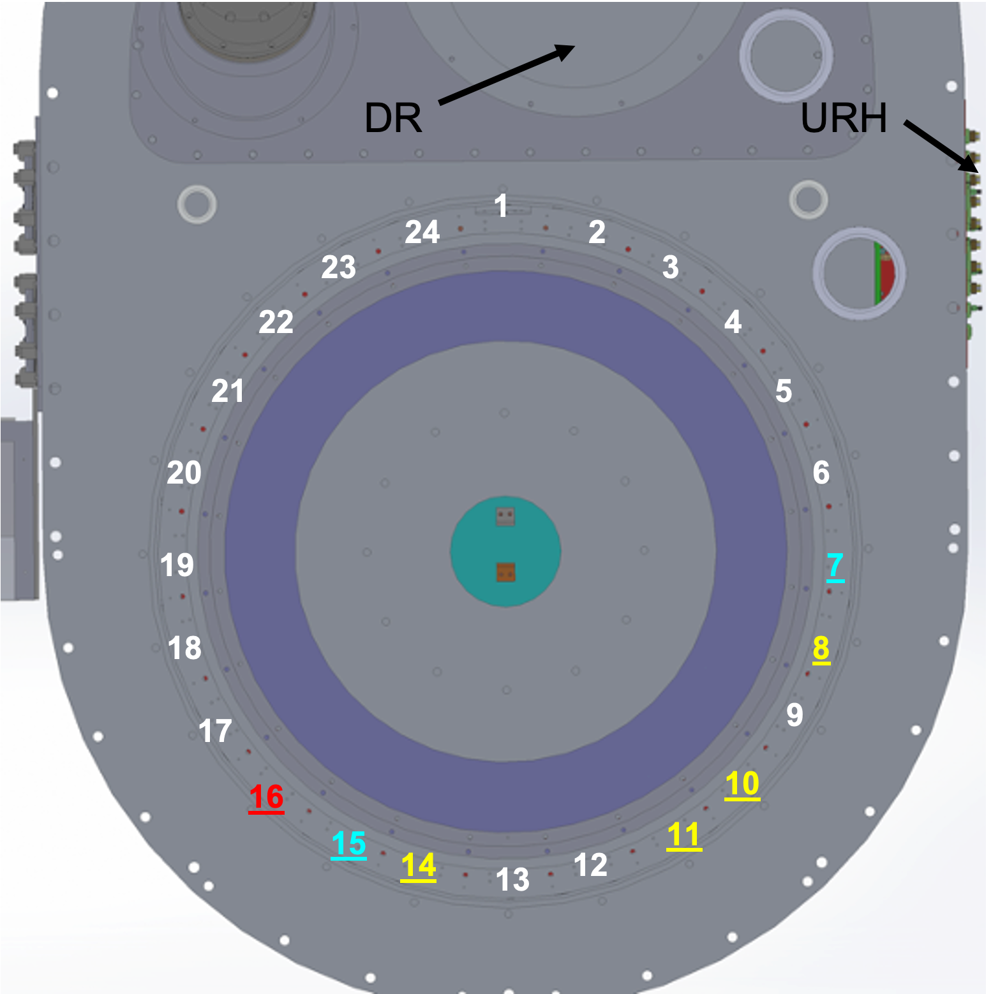
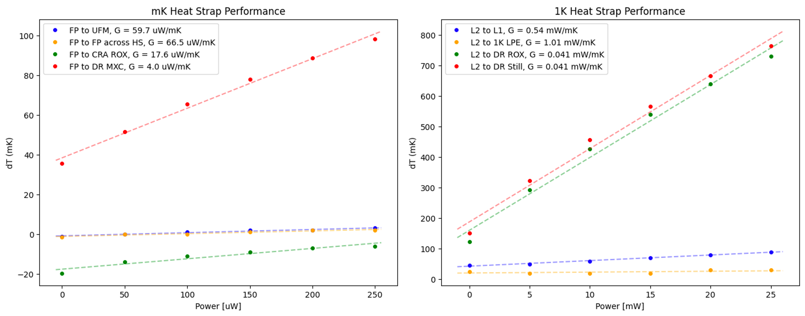
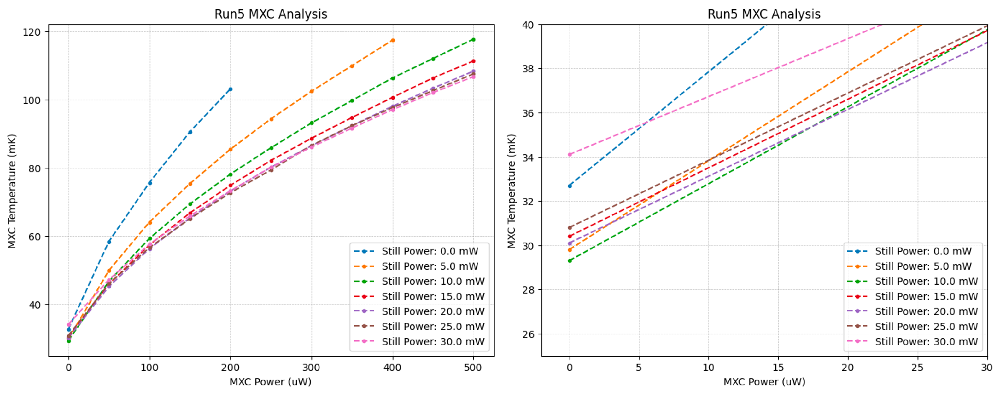
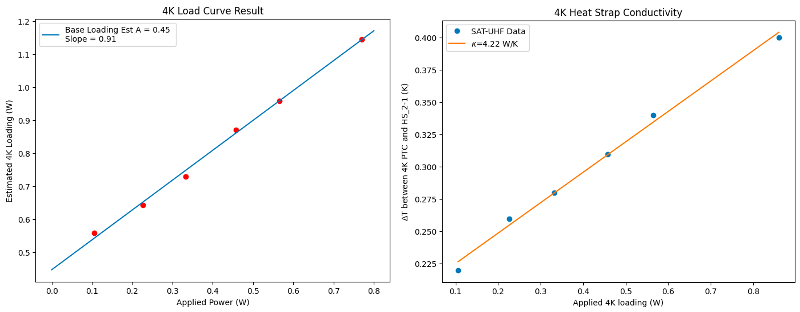
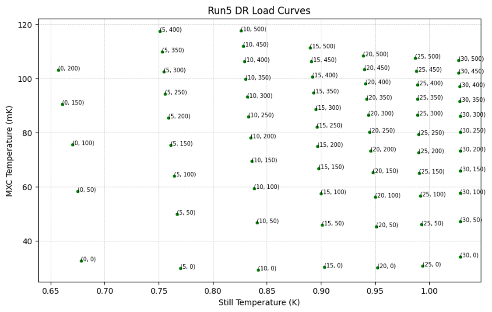
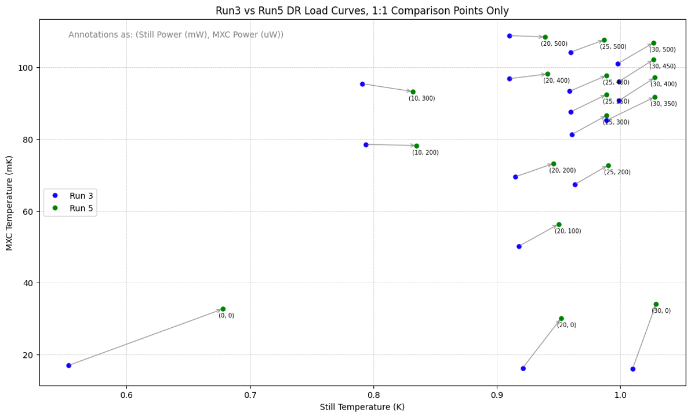
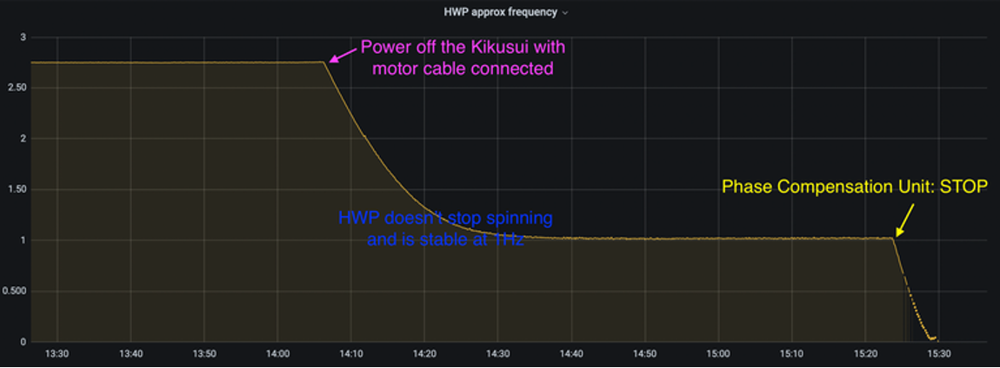
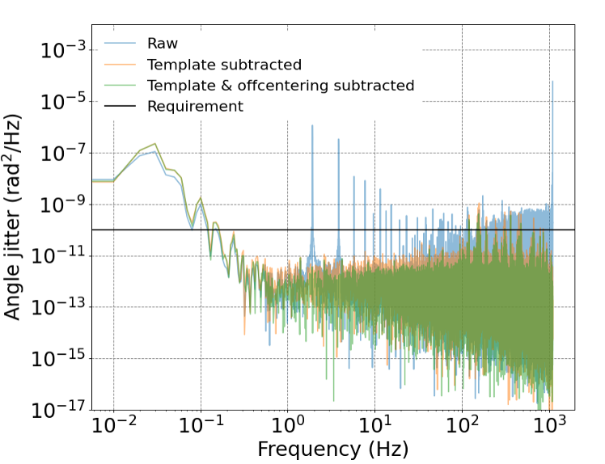
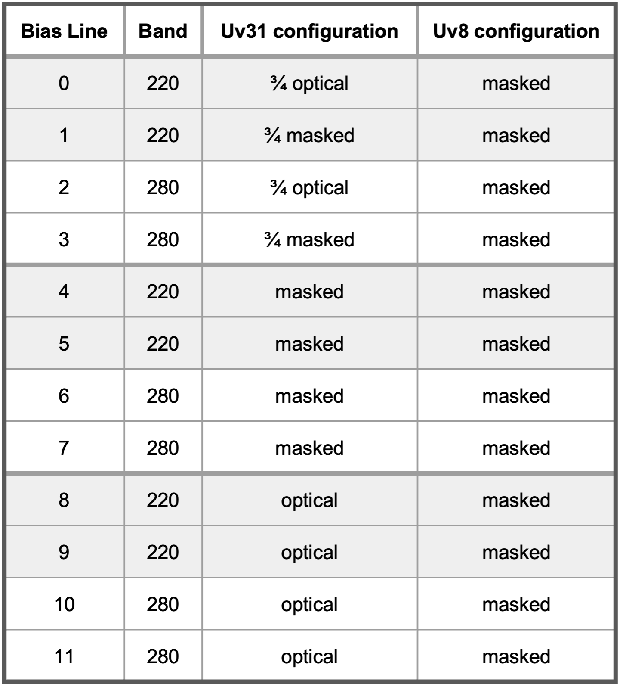

The Simons Observatory Small Aperture Telescopes
Parts of this chapter are adapted from (Mangu et al. 2023).
This section will focus on the SATs, which are tailored to search for
primordial gravitational waves, with the primary science goal of
measuring the primordial tensor-to-scalar ratio r. The
integration and deployment of SAT-UHF will be discussed in detail, as
that effort was led by the Berkeley group. More details on general SAT
integration and testing efforts can be found in an upcoming
collaboration paper (Galitzki et. al. 2024).
The Simons Observatory
To review the previous chapters, SO is a CMB experiment currently deploying an array of three 0.42-meter small aperture telescopes (SATs) and one 6-meter large aperture telescope (LAT) in the Atacama Desert in Chile at an elevation of 5200 meters (Zhilei Xu et al. 2020; Zhilei Xu et al. 2021; Ali et al. 2020; Galitzki et al. 2018; Kiuchi et al. 2020). SO will nominally make accurate measurements of the CMB, fielding a total of \(\sim\)68,000 Transition Edge Sensor (TES) detectors covering angular scales between one arcminute to tens of degrees (Ali et al. 2020; The Simons Observatory Collaboration 2019). The SATs and the LAT will be observing mid-frequencies (MF) centered at 93 and 145 GHz, ultra-high-frequencies (UHF) centered at 225 and 280 GHz, and low-frequencies (LF) centered at 27 and 39 GHz. We are currently deploying the LAT, two MF SATs, and one UHF SAT. The SATs aim to map 10% of the sky at a 2 \(\mu\)K-arcmin noise level. SO will search for inflationary signatures and study particle physics beyond the Standard Model by constraining the sum of neutrino masses, probing the nature of dark energy and dark matter, and enabling a model-independent search for light relic particles from the early universe. The SATs are tailored to search for primordial gravitational waves, with the primary science goal of measuring r at a target level of \(\sigma(r) \approx 0.003\) after a five year observation period (The Planck Collaboration 2020; The Simons Observatory Collaboration 2019).
SAT Design
All SATs contain the same basic 3 lens refractor structure, as shown in Figures 1.1 and 1.2. More details can also be found in (Kiuchi et al. 2020; Galitzki et al. 2018; Ali et al. 2020). The major cryogenic components include a Cryomech PT420 Pulse Tube Cooler (PTC) and PT420-backed BlueFors SD-400 Dilution Refrigerator (DR). The two PTCs help get the cryostat to 40K and 4K, and the DR allows the SAT optics tube to sit at 1K and focal plane to sit at 100mK. The 300K, 40K, and 4K shells are held together by aluminum rings separated by G-10 tabs (see Section 1.4 for details). These shells are also separated by layers of multi-layer insulation (MLI) blankets, which reduce radiative loading in the cryogenic system. The 4K-1K and 1K-100mK components are separated by carbon fiber trusses. Each of these thermal breaks contain a layer of aluminized mylar to serve as an RF shield around the trusses, continuing electrical continuity as an effective Faraday cage for the magnetically-sensitive detectors sitting at 100mK. The cryostat thus is pumped out from the front and back end to avoid pressure gradients that could break this thin RF layer.
The SAT itself has a \(\sim\)35\(^{\circ}\) field-of-view. The forebaffle encompassing a volume above the window reflects radiation incident at angles greater than \(\sim\)40\(^{\circ}\) off-axis out of the telescope to reduce loading into the system. The gridloader assembly loads a sparse wire grid to allow precise polarization calibration with a detector angle systematic error of 0.08\(^{\circ}\) (Murata et al. 2023).
The optical path of a CMB photon can be followed from the window all the way down to the focal plane. After passing the ultra-high-molecular-weight polyethylene (UHMWPE) window, a photon first interacts with one 300K and one 40K double-sided infrared (DSIR) metal mesh blockers. These were later replaced by a stack of radio-transmissive multi-layer insulation (RT-MLI) due to fabrication issues, discussed in Section 1.5. Sitting behind this is a 40K Al\(_2\)O\(_3\) IR blocker (or alumina filter) followed by a continuously rotating cryogenic half-wave plate (CHWP) . The CHWP is a magnetically levitating, rotating 3-layer birefringent (sapphire) polarization modulator. It reduces low frequency atmospheric noise and mitigates systematic effects that would otherwise occur from pair-differencing orthogonal detectors (Yamada et al. 2023; C. A. Hill et al. 2020). The sapphire is mounted onto a rotor assembly (the spinning component), consisting of G-10 ring enclosing neodymium (NdFeB) magnets. The rotor sits over the stator (the stationary component) consisting of superconducting yttrium barium copper oxide (YBCO), which transitions below \(\sim 90K\). Via flux pinning, the rotor only maintains rotational degrees of freedom once this transition temperature is reached. The sapphire is held in place with a gripping mechanism during the cool down and warm up procedures, but released below the transition temperatures. See 1.4 for CHWP testing done in SAT-UHF.
From the CHWP, a photon then interacts with a 4K alumina filter. The cold optics assembly (COA) begins with a 1K Lyot stop. The first of three meta-material anti-reflection-coated silicon lenses (Lens1) sits just behind. A series of ring baffles and the black tiles lining the COA absorb spillover signals at the cold stages. Following a 1K low-density polyethylene low-pass edge (LPE) filter sit two more silicon lenses (Lens2 followed by Lens3). Finally, right before the focal plane assembly (FPA) there is a 100mK LPE filter. All of the filters, CHWP, and window have anti-reflection coatings, and each filter type serves a different purpose. The DSIR filters reflect out-of-band incident radiation, the alumina filters absorb remaining spurious radiation and re-radiate them at lower temperatures, and the LPE filters blue (i.e. high-frequency) leaks from getting to the focal plane. See Section 1.4 for examples of how blue light leaks were tested.
The focal plane in the SATs and LAT are hexagonally tiled with Universal Focal Plane Modules (UFMs), which house the dual-polarized, dichroic TESs. These UFMs consist of both optical components and readout components (McCarrick, Arnold, et al. 2021; E. Healy et al. 2022; E. E. Healy et al. 2020). SO uses microwave multiplexing, which allows O(1000) detectors per readout chain. Each readout chain traverses a cold readout assembly (CRA) and universal readout harness (URH) (Sathyanarayana Rao et al. 2020; Moore et al. 2022). The CRA takes the signal from 100mK to 4K, and the URH takes the signal from 4K to the 300K readout port on the SAT. This signal is amplified at the 4K and 40K stages and demodulated with the warm readout electronics developed by SLAC (i.e. SLAC Microresonator Radio Frequency or SMuRF electronics) (Henderson et al. 2018; Yu et al. 2023). The focal plane is protected from magnetic fields by a series of magnetic shields at the 1K, 4K, and 40K stages (Galitzki et al. 2018; Ali et al. 2020; Kiuchi et al. 2020). The 40K and 4K magnetic shield are made with A4K (high-permeability, or \(\mu\), metal), and the 1K magnetic shield is superconducting. Finally, the thermal environment of the SAT is tracked through the housekeeping port, which reads out all diodes and ruthenium oxide (ROX) sensors strategically placed around the SAT.
In an effort to streamline design and production of the SO telescopes, there are some key components that are designed to be interchangeable between the LAT and any of the SATs. For example, any component labelled with ‘Universal’ has this characteristic like the URH and UFMs (which also consist of a Universal Multiplexing Module attached to the optical stack) (E. Healy et al. 2022; E. E. Healy et al. 2020; McCarrick, Healy, et al. 2021). Similarly, the SMuRF system is used across all telescopes. Conversely, there are some non-negligible differences between the SATs. Different frequency bands require different optics: specifically, the filters, filter thicknesses, lenses, CHWP sapphire stack thickness, and different detector parameters (which live in the UFMs). Also, while SAT-MF1 and SAT-UHF use mullite-duroid anti-reflection coatings, SAT-MF2 uses meta-material coatings. Small mechanical differences between all SATs are expected, and are taken into account for integration and testing requirements.
Integration and Testing Strategy
Every SAT has been carefully integrated and tested in steps to ensure deployment readiness. SO is an important precursor to experiments like CMB-S4 to ensure technological readiness and resource allocation. Such large scale experiments involve deployment strategies to get many telescopes to the field. For SO, all 3 SATs have the same basic structure. Thus, it was prudent to stagger integration of the SATs sequentially to match hardware production timelines. Any design changes that were needed from testing the first SAT (SAT-MF1) trickled down to SAT-MF2 and SAT-UHF to save integration and testing time on the following SATs. Here we provide a brief outline of testing for deployment readiness:
Mechanical: Thermal and vacuum performance, CHWP mechanical performance, grid loader and rotator mechanical performance, magnetic shielding performance, equipment enclosures status
Electrical: Readout performance, detector performance, cryogenic thermal sensing and control, warm housekeeping sensor performance
Optical: Optical component performance, spectral performance, near and far-field optical response, end-to-end optical efficiency, polarization performance
Safety: Motion controllers and actuators, integrated system safety
Site Preparation: Commissioning and operations software, packing and shipping plan, deployment plan
SAT-MF1 did a thorough review of all deployment requirements and retired many risks for the other SATs. As a result, SAT-MF2 and SAT-UHF were able to reach deployment readiness faster. For example, grid loader mechanical performance became a retired risk. This strategy also allowed SAT-MF2 and SAT-UHF to diverge from the SAT-MF1 testing plans and tackle new problems. For example, SAT-MF2 was able to test the CHWP sag at different elevation angles, and SAT-UHF was able to test truss strength and search for high frequency leaks in its optical chain. Thus, the later SATs could perform focused studies to address new concerns and formulate a more comprehensive picture of the telescope operation. On the software side, much of the pipeline and analysis development was pushed to near-completion for SAT-MF1. Thus, deployment readiness review of certain software such as commissioning and operations software were not repeated for other SATs, and were instead further developed directly at the Chilean site.
While SAT-MF1 was reviewed on all the above topics, the last deploying nominal SAT (SAT-UHF) was reviewed on the following condensed version of this: thermal and vacuum performance, CHWP mechanical performance, equipment enclosure status, readout performance, detector performance, optical component performance, personnel and instrument safety, and a combined shipping and deployment plan. Basic mechanical, electrical, and optical performance across all SATs was ensured prior to packing approval. For site, each SAT had to develop an independent packing and shipping plan along with a deployment plan. Staggered deployment at the Chilean site allows solutions of new issues to trickle down to the other SATs similar to the in-lab integration and testing strategy.
In-Lab Integration and Testing of SAT-UHF
SAT-UHF was integrated and tested extensively at Berkeley. The truss testing, thermal and vacuum validation, CHWP validation, readout validation, and detector validation will be summarized in this section to outline key pre-ship challenges and successes.
In this section, Run3 refers to a cooldown where only the PTC, DR, and housekeeping were installed. This was a run performed after the DR had a superfluid leak, and the DR unit had to be replaced by BlueFors. The original leak was very slow, and warmed up the SAT after about 3 weeks in a previous cooldown. Helium was detected in the SAT body. The Princeton SAT (SAT-MF2) had also faced a superfluid leak that was much faster, and had similarly replaced their DR unit. For Run4 the following where installed: magnetic shields (4K and 1K), OT, window and all filters except 100mK low pass edge (LPE) filter, DR heat straps, a temporary focal plane base (FPB), new CHWP actuator shafts and the sapphire with its cradle. This run did not have: 4K and 1K magnetic shield lids (4K and 1K), the superconducting magnetic shield, the 100mK filter or filter holder, any of the 3 lenses, UFMs, a 1K cylindrical shield piece, the 1K-100mK RF shield, or the DR heat strap strain relief. It was also missing one copper heat strap for the 100mK stage. Finally, Run5 was our final pre-deployment run which had everything installed with 2 UFMs (as the final 7 deployment UFMs were screened and sent directly to site).
Truss Testing



The 300K-40K-4K truss that holds the 300K shell, 40K shell, and 4K shell together went through a redesign after SAT-MF1 had a truss failure. The truss structure is shown in Figure 1.4(a, b, d), where each stage is thermally shorted to an aluminum (Al) ring and separated by a set of 24 G-10 tabs. G-10 is a type of fiberglass-epoxy laminate material that has very low thermal and electric conductivity, and thus acts as an excellent insulating material between stages. The original tab design in Figure 1.4(a) had a piece of G-10 inserted and epoxied into an Al foot piece that bolted into the Al rings. As shown in Figure 1.7, there were significant delamination issues with this design, with the failure at the epoxy joint.
The surface area for the epoxy to bind to was insufficient, and the groove in the Al foot did not have space in the pockets to hold the epoxy properly (e.g. a dolphin tail shaped groove is a good option over a rectangular groove meant to fit the G-10 insert). This was a significant technical challenge since the SAT in an asymmetric shape (most telescopes are axially symmetric), and has a very large volume compared to other small aperture telescopes. It is clear in Figure 1.7 that there was a “potato-chipping" effect from the axial asymmetry. Significant forces at play here were vacuum deflection, the physical weight carried by each stage (\(\sim 500\)kg total), and thermal contraction. Thermal contraction was calculated to be an order of magnitude more important than the other two forces, and this was taken into account in the research and development process.
The redesign effort in the collaboration resulted in 1.4(b), with each tab a fully G-10 piece in an “I" shape. There are 4 small Al rods per tab that rest on each foot, and are screwed down with the tab itself. These serve to evenly distribute the load bearing across the G-10 foot since the tab itself is quite thin to allow for differential thermal contraction between temperature stages from cryogenic cycling. Figure 1.4(d, e, f) shows the warm truss testing done at Berkeley. The 4K load was a 3G test with 300kg (4K nominal load) \(\times\) 3 = 900 kgf load test, and the 40K load was a 3G test with (300kg (4K nominal load) \(+\) 200kg (40K nominal load)) \(\times\) 3 = 1500 kgf load test. In both cases, the force was applied for 2 minutes. The test setup involved a lead screw/threaded rod attached to a beam assembly with a jam nut, washer stack, and thrust bearing. An adapter plate attached to the truss ring and a mass/load plate to appropriately spread the applied load. We incorporated a through-hole style compression load cell to measure the applied load. We also had the end of the lead screw machined to turn the entire rod safely from a distance from the top of the cryostat. Turning a nut welded to the rod at the top pushed the adapter plate down at the location of the center-of-mass (COM) for either the 4K or 40K stage (as they both have a different COM). The flatness of the truss rings were tested before and after the load test, and passed the criteria in that the truss conformed to the shape of the SAT as expected. Sufficient cryogenic cycling across all of the SATs has been done since the truss replacements, and these new rings have successfully been used in the Chilean site.
Thermal and Vacuum Validation

The thermal and vacuum validation went through several rounds of checks. The final requirements involved checking the SAT cryostat internal operating environment, the general mechanical performance, cold stage loading, temperature control, DR still (1K) and mixing chamber (“MXC" 100mK) heaters, and temperature measurement and control performance. Refer to Figure 1.8 for the focal plane thermometry configuration used in this section.
| PTC 40K | PTC 4K | DR 4K | DR 1K | DR 100mK | |
|---|---|---|---|---|---|
| SAT-UHF | 31.9K | 2.95K | 3.17K | 0.842K | 29.3mK |
| FPB | UFM | 40K Filter | 4K Filter | Lens 1 Mount | |
| SAT-UHF | 62.8m | 63.6mK | 62.1K | 4.75K | 1.03K |
For the cold stages, the internal operating environment temperature range was 0.060K at the focal plane base (FPB) to 65K at the 40K filter on the front end at base. This satisfied the requirement of \(\delta T \leq 80\) K, where the \(\delta T\) is the difference between the maximum temperature read on the 40K stage and the minimum temperature read at the focal plane stage. This requirement is set by the required transition temperature of the CHWP YBCO superconducting magnets. See Table 1.1 for a complete documentation of Run 5 base temperatures.
The cold mechanical performance was split by the four temperature stages:
40K stage: The stage temperature was a minimum at the PTC cold head (31.9K), and maximum at the front end filter (66.1K). This satisfied the 30-70K range requirement. At the PTC cold head, the temperature did not exceed 33.6K, which satisfied the \(\leq 40\)K requirement1. With the spinning CHWP, the temperature fluctuation was 3.5K peak to peak, which met the \(\leq 4\)K peak to peak requirement. There was 28K/hr cooling rate for the first 7 hours on the PTC 40K cold head while cooling.
4K stage: The stage temperature was a minimum at the PTC cold head (2.95K), and maximum at the front end filter (5.46K). This satisfied the \(\leq 6\)K range requirement. At the PTC cold head, the temperature did not exceed 3.19K, which satisfied the \(\leq 4\)K requirement. With the spinning CHWP, the temperature fluctuation was 0.23K peak to peak, which met the \(\leq 1\)K peak to peak requirement. There was 19K/hr cooling rate for the first 7 hours on the PTC cold head while cooling.
1K stage: The stage temperature was a minimum at the DR cold head (0.751K assuming non-zero still power applied), and maximum at the Lens1 mount (1.05K) while the CHWP was spinning. This satisfied the 0.7-1.5K range requirement. At the DR cold head, the temperature did not exceed 0.874K (with 10mW power applied), which satisfied the \(\leq 1.2\)K requirement. With the spinning CHWP, the temperature fluctuation was 0.02K peak to peak at Lens1 and Lens2, which met the \(\leq 0.4\)K peak to peak requirement. There was 1.8K/hr cooling rate on the DR still after turning on the DR cooling loop.
100mK stage: The stage temperature 60mK at base, which satisfied the \(\leq 100\)mK requirement. With the spinning CHWP, the temperature fluctuation was \(<0.01\)mK change over a period of 5 minutes at the base temperature, which met the \(\leq 1\)mK peak to peak requirement. There was 2.2K/hr cooling rate on the DR MXC after turning on the DR cooling loop.
| Nominal Prediction | Run 4 Average | Run 5 Average | |
|---|---|---|---|
| Still Base Loading (mW) | 4.6 | 4.7 | 3.3 |
| MXC Base Loading (mW) | 28 | 33 | 33 |
The SAT cold stage loading at 40K had not been measured in a fully integrated SAT-UHF because the heater at that stage had broken. However, this was superseded by the nominal temperature performance to meet passing criteria. The 4K base loading was 0.45W (meeting \(\sim0.5\) W typical/expected loading) and 1K base loading was 3.3mW (meeting \(\sim5\) mW typical estimate). The 100mK loading was \(33\mu\) W which was above the typical \(25\mu\)W, but was again superseded by the temperature performance to meet passing criteria. Table 1.2 summarizes the Run 4 and 5 base loading estimates. See Figure 1.11 for the 4K load curve analysis, Figure 1.14 for the DR load curves, Figure 1.10 to see which still power was used for the base MXC temperature, and Figure 1.9 for the 1K and 100mK thermal conductance performance shorting the DR cold heads to the focal plane.





For vacuum performance, the internal operating requirement for pressure was \(\leq 133 \mu\)Pa. This was met with \(60\mu\) Pa on the warmest day of testing (i.e. \(90^{\circ}\) F ambient temperature). For the general mechanical performance, the cool down time was 9 days (which met the maximum requirement). The warm up requirement was \(\leq 7\) days, which was not rigorously measured due to CHWP tests that were prioritized during warm up (discussed in the additional testing subsection). The time taken from pumping out to starting the cooling process (i.e. turning on PTCs) was 3 days for both Run 4 and 5, which met the requirement of \(\leq 4\) days. Note that it took 3 days to reach \(2.1\times10^{-2}\) mbar after pump/purging using a non-deployment pump. We did not have a needle valve for this pump down, so our pressure rate of change (\(\sim 15\) hPa/min) was above the conservative 5 hPa/min requirement, but was comparable to the rate of change by other SATs (e.g. SAT-MF1 pumped down at 12 hPa/min).
Finally the temperature measurement and control involved a closed loop temperature circuit controlling a Lakeshore 372 sample heater to stabilize the detector array temperatures for optimal operation (see Chapter [ch:detarrays] for information on detector operation). The DR still heater was controlled by a Lakeshore 372 warm up heater output, and the MXC heater was controlled by the same Lakeshore but using the sample heater output. The 40 K and 4 K diodes and the 1 K and 100 mK ROXs were calibrated by Yale. The heater control closed loop stability likely had a grounding issue. The PID (proportional-integral-derivative controller) was stable with a dedicated Lakeshore LS372, and the closed loop response time was \(<1\) s response, as per the requirement. There was a suspected grounding issue in the lab, and so the ROX noise level was unreliable.
In summary, all the internal temperatures, pump down, and cool down characteristics were within the specifications and highly stable. Some additional notes are that the focal plane base (FPB) and UFM temperatures are quite close, suggesting good heat sinking between detectors and focal plane. Additionally, the YBCO temperatures in the CHWP were \(\sim49.8\) K, which was well under the YBCO transition temperature. The focal plane, still, and MXC temperature control was implemented and effective. The pre-ship deployment risks included the pump down time and rate since the full deployment configuration is different from the system that was used for in-lab testing.
CHWP Validation


The CHWP requirements for SAT-UHF were largely related to the rotation mechanism. The maximum spin speed was 2.75 Hz, which was within the requirements. The time to spin up to stable rotation was 1 minute (within the 5 minute limit), and the spin down time to stationary was less than 10 minutes using a phase compensation unit. This phase compensation unit is useful for getting the CHWP below 1 Hz (see Figure 1.15). Once the CHWP is spinning, the rotation stability is very important. The speed variation over one hour was \(<0.0005\) Hz which was well within the \(<0.01\) Hz requirement. The rotation decentering from the optical axis of the telescope was less than 1 mm as required. Note that the CHWP sags when tilted (e.g. when the SAT is observing at some elevation) at some predictable amount (see (Charles A. Hill 2020) for details on CHWP sag). In the field, the centering of the sapphire will compensate for this sag. Additionally, the angle jitter measurement met the requirement, as shown in Figure 1.16. The angle jitter encapsulates any angle encoding errors from data acquisition timing jitter and encoder readout noise (see (Yamada et al. 2023; Charles A. Hill 2020)). Gripping and ungripping the sapphire has a cycle time that was within the 30 s requirement. The final major requirement was that sensed limits be implemented for any SAT motion control systems, which was made compliant by using two limit switches per one actuator. This requires a final tuning procedure once the actuator controller is deployed in final configuration at the Chilean site.
In summary, the CHWP successfully spun in both directions (using a phase compensation unit). It was tested to spin constantly for more than 10 days at 2 Hz very stably with a standard deviation of \(<5\times10^{-4}\) Hz/hr. The CHWP could be put into a hard stop remotely with a phase compensation unit, which improved rotation stability (details are provided in (Yamada et al. 2023)). The CHWP remote control successfully sent PID loop controlled frequency commands. This was using a lab agent for in-lab use, and would need to be updated for site agents. Finally, the thermal and magnetic effect of the CHWP was nominal. We saw that the CHWP did not dump too much power onto other stages because all temperatures measured in the SAT were within the specifications that took into account CHWP thermal loading. Additionally, no thermal resonances in the focal plane temperature were found at the nominal operation frequency of 2 Hz. A Hall probe continuously checked the magnetic field intensity around the YBCOs, and showed good magnetic health of the system. The potential pre-ship risk was that some external electronics and cables were not checked during the in-lab testing (as they were not delivered in time) and were scheduled to be checked directly at the Chilean site. For more information on the SO SAT CHWPs, please refer to (Yamada et al. 2023; Sugiyama et al. 2024).
Readout Validation

The readout validation involved requirements covering overall performance, the cryostat readout interconnects, and the warm readout interface. Refer to Figure 1.18 for the Run5 detector array focal plane configuration. One fully masked UFM (Uv8) and one half-masked half-optical UFM (Uv31) were installed along with a Single Pixel Box (SPB) and Single Mux Box (SMB). The SPB and SMB were installed in case of debugging needs, and ended up not being necessary for the run. For more information on microwave multiplexing readout, please refer to Chapter [ch:detarrays] to better understand this and the detector validation section! From hereon out, we refer to the UFM detector arrays simply as Uv8 and Uv31 for simplicity.
For overall readout performance, the UHF readout yield was calculated by dividing the number of possible tracking channels by 1820. For a UHF UFM, there are 1848 resonators in total, of which 1820 are coupled to SQUIDs, of which 1756 are coupled to TESs, of which 1720 are optically coupled (i.e. connected to an antenna). Note that there are 66 resonators on each mux chip, and \((66 - 1) \times 28 = 1820\) in an assembly where 1 resonator is uncoupled to a SQUID on each chip. Here, “channel" refers to how many resonators are found by the SMuRF itself, and “tracked channel" refers to how many SQUID-coupled resonators are available2. Thus the number of tracking channels simply refers to the number of channels on which SMuRF is measuring noise. SAT-UHF measured readout yields of 85% for Uv8 and 87% for Uv31, which met the minimum requirement of \(>78\%\). For basic noise measurements from SMuRF, the readout white noise level was measured to be 55.9 pA/\(\sqrt{Hz}\) for Uv8 and 61.8 pA/\(\sqrt{Hz}\) for Uv31, satisfying the \(<65\) pA/\(\sqrt{Hz}\) requirement. The readout 1/f noise knee frequency met the requirements of \(<0.1Hz\).
For the readout interconnect performance, the radio frequency (RF) behavior was checked using a Vector Network Analyzer (VNA). The warm (300K) and cryogenic measurements are in Figure 1.19, and were compliant with the requirements. No direct current (DC) shorts to ground were found in the DC lines during probing before Run 5. There were known issues with Channels 3, 6, and 12 during Run 5 (which also led to strategic UFM placements). Channels 3 and 6 had unstable 40K amplifier behavior in the URH and were sent to Arizona State University (ASU) directly after Run5 for potential repairs. Channel 6 had a frayed coaxial cable that was replaced after Run5 in lab, and later had to require a 4K amplifier replacement during Chile site integration (see Section 1.5). As shown in Section 1.5, all channels are currently working at site.

Finally, the warm readout interface performance was tested, which involved a set of SMuRF quality control checks. The RF readout noise was complaint, in that SMuRF loopback tests (on the Advanced Mezzanine Cards, or AMCs) had a noise of about -100 dBc/Hz which were the maximum limits. The high frequency detectors required a particularly high TES bias voltage of \(\pm\)35V in high current mode, and a TES bias current of \(\pm\)12.8mA in high current mode. The RF frequency range between 4-6 GHz saw no excess attenuation, and the RF output power was not of concern (but on the higher side).
In summary, all readout channels (except channels 3, 6, and 12) were working within specifications. The SMuRF quality control testing was nominal but would need to be checked with the final configuration at the Chilean site. Potential risks in pre-shipment were the problem channels in the readout chain, but the issues had been narrowed down and the risk management was already in place (e.g. shipping the URH to ASU). This risk has since already been mitigated. The warm compliance for the SMuRF system needs to be rechecked, especially because a complete SAT system was not shipped to Berkeley and needs to be assembled fully at site. One of two ATCA crates (and one of two Vadatech network switches) were thus used in lab, with 6 of 7 SMuRF blades. There was one AMC that needed to be fixed, and has since been fixed. Additionally, there was discussion in choosing a different resistor for the cryocards in the field to accommodate UHF detectors operating with such high bias compared to MF detectors.
Detector Validation

The detector validation was split by UFM, so each of the two UFMs in Run 5 (Uv8 and Uv31) were used to evaluate detector performance and design. Note that both of these UFMs were not final deployment sets, and were sent back to Princeton afterwards. The final deployment sets of UFMs are outlined in Section 1.5. Each UHF UFM contains both 220 (“UHF-1") and 280 GHz (“UHF-2") bands, and the detectors are biased along the “bias line" they are connected to. A schematic of how bias lines run in an MF UFM is shown in Figure 1.18, and the bias line mapping to frequency band and optical configuration are listed in Figure 1.20. Both UFMs were held at an operating temperature of 100mK, which satisfied the range requirement of \(90-110\)mK. Although not measured in SAT-UHF, Princeton measured the TES average \(T_c\) (where \(T_c\) is the bolometer’s operating temperature, see Chapter [ch:detarrays]) to be 165mK (within 150-170mK requirement), with a dispersion of 2mK (within \(\leq\)4mK requirement).
The first set of requirements are related to the full-masked UFM Uv8. The UHF detector yield is defined as the number of measured IV curves, out of 1756 total possible (and further split by frequency band). Recall that there are 1756 SQUID-coupled TESs on these UHF UFMs. The 220 GHz (UHF-1) band had 73% detector yield and the 280 GHz (UHF-2) band had 82% detector yield, both of which surpassed the \(>70\%\) yield requirement. Note that bias line 11 on the UFM did not work, and was removed from this calculation.
In examining the detector (TES) performance, the measured normal resistance of the TES (\(R_n\)) was 8.8m\(\Omega\). All detectors for both bands were biased at 50% \(R_n\). The TES time constants (i.e. \(\tau_{eff}\) at 50% \(R_n\)) were measured to be 1.1ms for UHF-1 and 0.73ms for UHF-2, which was higher than the requirement (0.20-0.65ms for UHF1 and 0.18-0.57ms for UHF-2), but this was expected and consistent with results from previous measurements done at Princeton University, who are in charge of UFM screening. The TES total noise level (i.e. the NEP at 50% \(R_n\)) was measured as 32.1 aW/\(\sqrt{Hz}\) for UHF-1 and 46.9 aW/\(\sqrt{Hz}\), which were well within the requirement of \(<76.0\) aW/\(\sqrt{Hz}\) for UHF-1 and \(<103.8\) aW/\(\sqrt{Hz}\) for UHF-2.
Finally, the detector design performance was also tested. For UHF-1, the TES thermal noise level simply referred to the G noise (see Chapter [ch:detarrays] - G noise, thermal noise, and Johnson noise are all the same thing) which was 13 aW/\(\sqrt{Hz}\) for UHF-1 and 16 aW/\(\sqrt{Hz}\) for UHF-2, meeting the requirements of \(<27\) aW/\(\sqrt{Hz}\) for UHF-1 and \(<30.7\) aW/\(\sqrt{Hz}\) for UHF-2. The TES saturation power (\(P_{sat}\)) was measured to be 14 pW for UHF-1 and 19.1 pW for UHF-2, with requirements of 16.9-28.10 pW for UHF-1 and 18.30-30.50 pW for UHF-2. While the \(P_{sat}\)s are below the range for UHF-1 and on the lower end of the range for UHF-2, this is consistent with Princeton’s non-compliance in their screening and thus not a concern.
The second set of requirements are related to the half-masked UFM Uv31. The 220 GHz (UHF-1) band had 77% detector yield and the 280 GHz (UHF-2) band had 83% detector yield, both of which surpassed the \(>70\%\) yield requirement. The optical detectors were fully saturated and therefore made it difficult to get an optical yield. Thus, it is useful to also look at the detector yield of only the masked detectors, which was 76% for UHF-1 and 89% for UHF-2. Again not measured in SAT-UHF, but Princeton measured the TES average \(T_c\) (where \(T_c\) is the bolometer’s operating temperature, see Chapter [ch:detarrays]) to be 174mK (a little above 150-170mK requirement but not a concern), with a dispersion of 2mK (within \(\leq\)4mK requirement).
In examining the detector (TES) performance, the measured normal resistance of the TES (\(R_n\)) was 7.2m\(\Omega\). The masked detectors for both bands were biased at 50% \(R_n\), but the non-fully masked detectors were biased to a range of 40-60% \(R_n\) during operation. The TES time constants (i.e. \(\tau_{eff}\) at 50% \(R_n\)) were measured to be 0.8ms for UHF-1 and 0.59ms for UHF-2, which was higher than the requirement (0.20-0.65ms for UHF1 and 0.18-0.57ms for UHF-2). Each UFM is divided into three rhombuses (A, B, and C), and this tested UFM had different fabrication techniques associated with each rhombus since it was initially used for screening. (Rhombus A is bias lines 0-3, B is 4-7, and C is 8-11). In this detector array, rhombuses A and B had a PdAu BLNG (pronounced “bling," see Chapter [ch:detarrays]), and rhombus C did not have any BLNG. BLNG is some metal (e.g. gold or palladium) that also sits in the bolometer island and often serves to tune/slow time constants. Optical time constants also tend to be slower than the “natural" time constants \(\tau_0\) (see Chapter [ch:detarrays]), and the optical detectors on rhombus C are slower as well. Additionally, the loading in-lab of optical detectors is greater than sky loading at site3 (Charles A. Hill 2020). These pre-deployment numbers were for masked Uv31 detectors on rhombus B, and were thus expected to be slower than the requirements. Princeton rhombus B numbers are comparable, and consistent with being slower than the requirement. The TES total noise level (i.e. the NEP at 50% \(R_n\)) was measured as 45 aW/\(\sqrt{Hz}\) for UHF-1 and 49.5 aW/\(\sqrt{Hz}\) for UHF-2, which was well within the requirement of \(<76.0\) aW/\(\sqrt{Hz}\) for UHF-1 and \(<103.8\) aW/\(\sqrt{Hz}\) for UHF-2.
Finally, the detector design performance was also tested. For UHF-1, the TES thermal noise level again simply referred to the G noise, which was 22 aW/\(\sqrt{Hz}\) for UHF-1 and 23 aW/\(\sqrt{Hz}\) for UHF-2, meeting the requirements of \(<27\) aW/\(\sqrt{Hz}\) for UHF-1 and \(<30.7\) aW/\(\sqrt{Hz}\) for UHF-2. The TES saturation power (\(P_{sat}\)) for the masked detectors was measured to be 30.1 pW for UHF-1 and 31.4 pW for UHF-2, above the requirements of 16.9-28.10 pW for UHF-1 and 18.30-30.50 pW for UHF-2. However, this was again expected consistent with Princeton’s non-compliance in their screening process for Uv31.
In summary, we saw good compliance with the requirements overall, with any deviations a result of the designs of the UFMs sent of us. There was good consistency seen between the tests done in SAT-UHF and Princeton’s screening measurements. The main pre-ship risks were that a fully populated focal plane with 7 UFMs was not tested as the UFMs were not fully ready at that time. We also did not have a complete SMuRF system to read out a full focal plane, as mentioned in the readout validation subsection. The UFMs we did test were not our final UFMs for site, and the high bias voltage/current and high \(P_{sat}\) will need to be accounted for during field operation (also briefly mentioned in the readout validation subsection).
Additional Run5 Tests
Since SAT-UHF was the last SAT to ship to Chile, we performed some tests for risk mitigation for the other MF SATs already in the field. Outlined here are three examples of some of these tests.

One of the first tests performed was actually initially done out of interest, but became relevant for MF SAT risk mitigation. Because the UHF detectors have much higher \(P_{sat}\)s compared with MF detectors, we can get optical detectors into their transition by putting a cover on the window. MF SATs were unable to perform this test because their optical detectors remained saturated in lab, since the sky is much colder at site than in the lab (Charles A. Hill 2020). Figure 1.21 shows this ability to transition with a window cover very clearly, and is promising for UHF detectors performing favorably at the site.


Another useful test was to check for high frequency leaks in the optical chain. This would rule out any “blue light" leaks that might cause our detectors to saturate in the field. The test set up is shown in Figure 1.22, where a small 2 inch diameter hole was cut into a large aluminum plate with a chopper and heat source. Then, small wire grid high-pass filter (HPF) pucks were used at 190, 270, and 320 GHz cutoffs. The behavior seen was as expected, with 320 GHz cutting all of the signal from both 220 and 280 GHz band detectors. Notice where the two UFMs were placed in a ray diagram 1.23. As a rough sidelobe test, the small 2 inch aperture was moved across the diameter of the window to make sure no spurious signals were seen both with and without the HPFs.
A simple test performed last was related to starting and stopping the CHWP while the SAT was tilted at an observing elevation (we chose \(50^{\circ}\)) since the in-lab testing must be done with the window pointing close to zenith due to the length of hoses between the DR gas handling system and the turbo table attachment on the side of the SAT. (The site configuration is very different, of course.) Thus, once the He3-He4 mixture was collected back into the DR gas handling system during the first part of the warm up process and only the PTCs were providing cooling power, we could disconnect these hoses to perform tilt tests. The CHWP sits at the 40K stage, so only the cooling power from the two PTCs (one of which is a part of the DR system) is necessary. We tilted the cryostat, and completely turned off power to simulate a site power outage which would stop the CHWP spinning. Then we turned power back on and started spinning the CHWP at the same tilt angle and let it spin stably for \(> 2\) minutes. Then, we rotated it back to zenith while it was spinning and turned it off. The test was a success with the CHWP displaying healthy behavior throughout.
Chile Site Integration of SAT-UHF
This section will briefly cover the complete integration of SAT-UHF receiver in Chile. Currently, equipment enclosures are being assembled that are required for operating the SAT on the platform. In the coming months, SAT-UHF will begin observations once it is placed on the platform with the completed enclosures!

At the Chilean site, the initial goal was to unpack and set up, and immediately do a pump down and leak check of the SAT with cryogenic components and the site window installed. Some pictures detailing this process is shown in Figure 1.24. At the high elevation of the site, the air pressure is much lower than at sea level during in-lab testing. To accommodate this, the lab testing UHMWPE window was 12mm thick, but the site window was 10mm thick. Although the site window had been vacuum tested and UCSD, it had not been used at site yet. Additionally, all of the o-rings were swapped from the lab testing Buna-N material to more weather-resistance Viton. Once the site window and o-rings were swapped and the PTC and DR were inserted, the pump down process was started. The leak check was successful, and integration could continue.

The backend integration will be discussed first, although the integration process itself integrated both the front and backend roughly at the same time. Refer to Figure 1.25. The URH was prepared, inserted, and tested in loopback configuration to ensure the readout chain and 40K amplifier were not damaged during shipment. The optics tube was inserted without Lens3, because there was a design error and the lens had cracked during the Run5 cooldown. There will be a Lens3 retrofit summer of 2024. For context, Lens3 sits closest to the focal plane. Lens2 is visible in 1.25(e) at the center. The optics tube mates with SAT via a 4K-1K truss that isolates the 1K optics from the 4K SAT shell - the truss is visible in 1.25(c) as it is also used to rig the optics tube for craning. Note that the SAT was shipped with the 40K magnetic shield attached. The 4K magnetic shield is craned in with the optics tube. Finally, the superconducting magnetic shield is installed after the 4K-1K and 1K-100mK CRA are craned in. The 1K-100mK CRA was craned in the with the 100mK LPE filter and gold plated focal plane attached. This can be seen in 1.27(a). Note that the DR 40K and 4K heat strapping were also complete in that picture. Once the readout chain was complete from 100mK to 300K, warm CRA and URH loopback testing was completed with all chains and amplifiers working well as shown in 1.26.


Then, all 7 UHF UFMs were installed and connected as shown in 1.27(b). All DC lines were probed carefully and checked for shorts to ground several times. A thorough grounding and anti-static set up was required for UFM installation, which is especially needed for the dry Atacama desert air. All backend thermometry for 40 K and 4 K diodes, 1 K and 100 mK ROXs, and any heaters (the most important one on the focal plane for temperature control) were routed to the housekeeping box and probed out before close up. The magnetic shield lids were attached, with heat strapping completed intermittently at every temperature stage.

The front end integration (see Figure 1.28) involved installation in the following order: 4 K AR-coated alumina filter, CHWP, 40 K AR-coated alumina filter, 40K RT-MLI, and the 300 K AR-coated UHMWPE window piece (with a small 300 K cylindrical piece that extended into the SAT inside). Note that the 40K and 300K DSIR filters used in Run4 and Run5 were swapped out for the RT-MLI stack. This was because there was an error in the complex and long time-scale DSIR fabrication process which created a non-negligible polarization bias (instrument polarization) in the optics. RT-MLI has been widely used in CMB experiments (Sobrin et al. 2022; Ade et al. 2018), and was a convenient swap for blocking IR radiation (Choi et al. 2013). The RT-MLI currently installed in SAT-UHF is made with a 46mm stack (one 6 mm thick foam, 22 thin sheets with \(\sim34\) mm total thickness, and then one 6 mm thick foam again) of foamed polystyrene, but there are also other viable options used in CMB experiments (such as the Zotefoam HD30 used by the BICEP team) (Ade et al. 2018).

The final integrated SAT is shown in Figure 1.29. The image also shows the SAT and UFM installation teams (with this author as the commonality between the two teams) once the UFMs had been installed, as that was a major milestone for the UHF team. The UHF SAT has been named Cosmic Plasma by this author’s third grade pen pal class “Courage Base"!
Current Status and Future Developments
SAT-MF1 is currently on the platform at the Chilean site and is on track for starting science observations in 2024. Reassembly, integration, and testing in a highbay at site was done prior to placing the SAT on the platform. SAT systematics testing is currently underway prior to full science observation. As described earlier, SAT-MF1 retired many site-related risks and enabled the quick integration of SAT-MF2. Now that much of the site infrastructure is in place from SAT-MF1 integration, SAT-MF2 is already on the platform as well. SAT-UHF is currently site, preparing to begin full observations summer 2024. The final in-lab cooldown was a success and the SAT is fully integrated at site. All SATs are thus on track for the 2024 science observations goal.
We reviewed the design, integration, testing and current status of the SO SATs, which are currently in a deployment phase. Nominal SO deployment will begin full observations in 2024. The SATs will enable the high sensitivities needed to search for inflationary signals with the target level of \(\sigma(r) \approx 0.003\) over the five year observing period. There are also plans to reach for higher sensitivities by adding additional LF and MF SATs in the next few years. The LF and UHF SATs will allow foreground cleaning for the primary CMB MF SATs, aided by the LAT which will also support both delensing and foreground subtraction efforts. Updated forecasting and instrument papers are in progress from the collaboration.